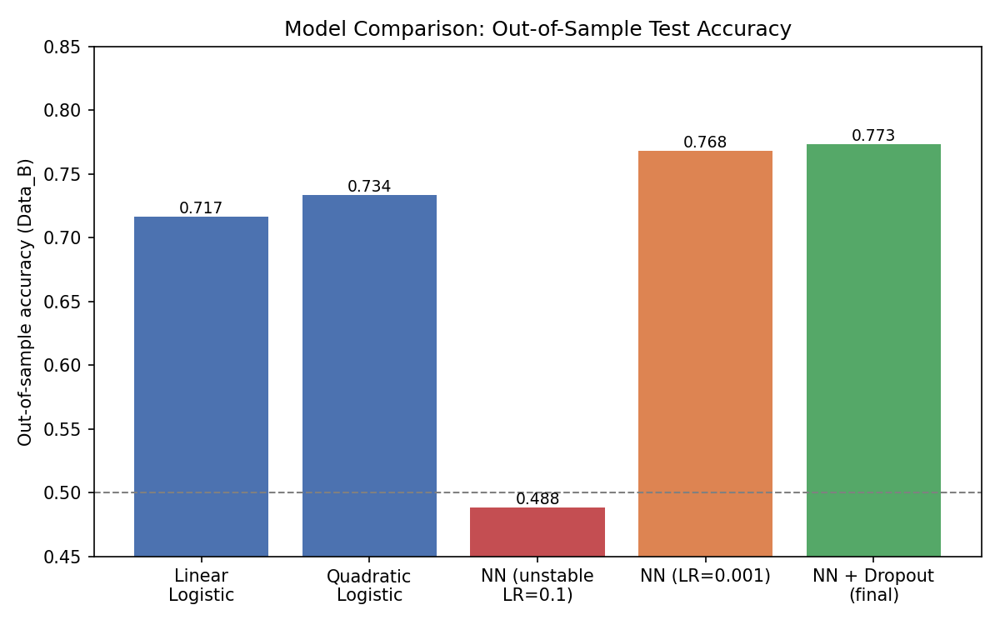
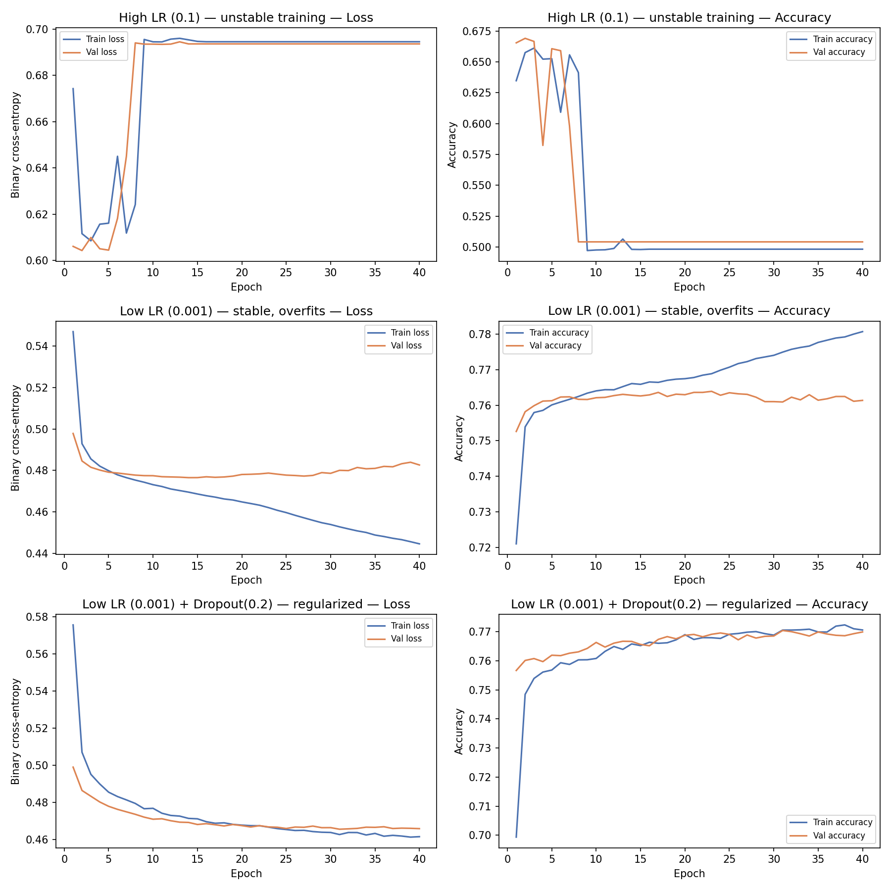

Order Book Predictor — Neural Order Flow Forecasting
A feed-forward neural network predicts short-term limit-order-book mid-price direction from multi-level bid/ask price-and-volume snapshots and recent order-flow history, benchmarked against linear and quadratic logistic regression baselines.
- Regularized NN: 77.3% out-of-sample test accuracy (F1 76.4%) on a held-out 10,000-row set.
- Linear logistic regression baseline: 71.7% · Quadratic logistic regression: 73.4%
- Independently reproduced the original notebook's reported 0.7733 test accuracy (got 0.7734).
